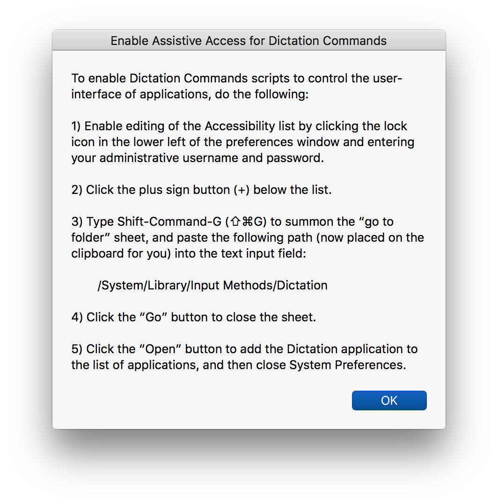
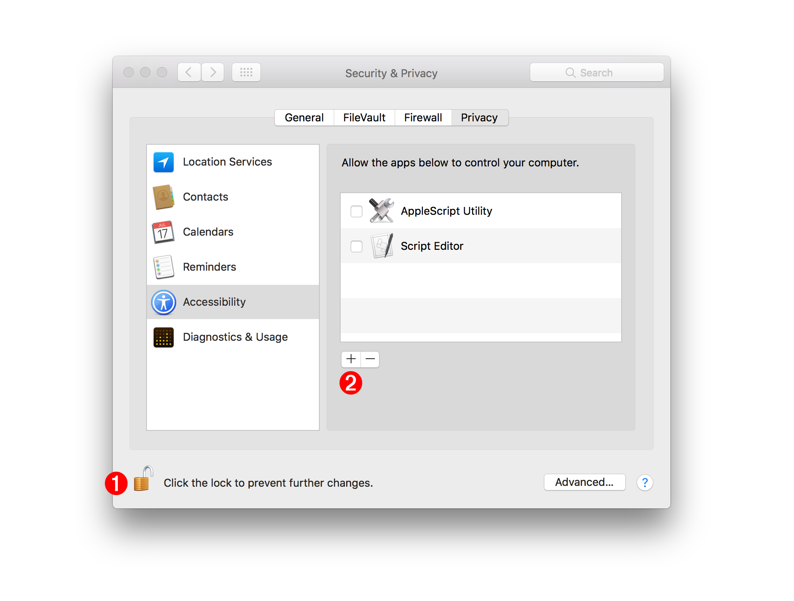
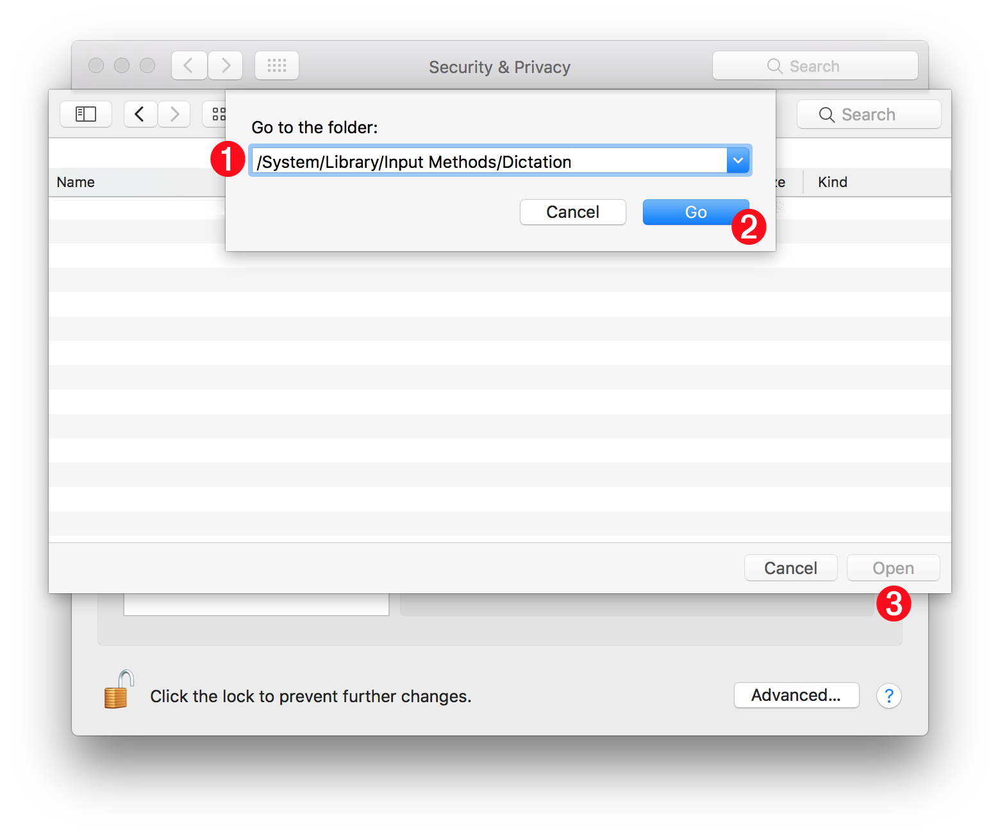
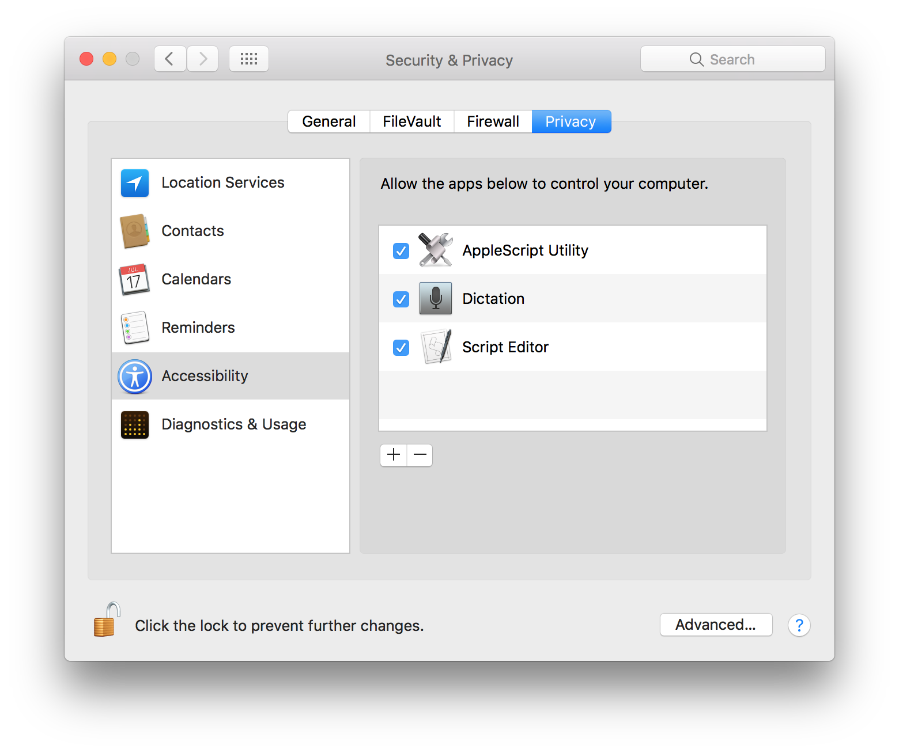

Enable Assistive Support
In performing their functions, some of the dictation commands simulate user-actions, such as pressing a button, or selecting a menu. For security purposes, only user-approved processes are allowed to control the user-interface of applications and the operating system.
The installer applet “4) Enable Assistive Access for Dictation Commands” will assist you in granting dictation services access to the assistive controls of the operating system.
DO THIS ►Launch the applet “4) Enable Assistive Access for Dictation Commands” and its opening dialog will appear (⬇ see below ) infront of the Security & Privacy preferences for Accessibility in the System Preferences application.

DO THIS ►After reading the instructions, click the OK button to dismiss the dialog, and then click the lock icon at the lower left of System Preferences window 1 (⬇ see below ) and enter your administrative username and password in the forthcoming security dialog.

DO THIS ►Next, click the plus button 2 (⬆ see above ) and a file-chooser sheet will display over the preferences window.
DO THIS ►Summon the path input field by typing Shift-Command-G (⇧⌘G) (⬇ see below ) and paste the path already on your clipboard into the field 1 and then click the Go button 2 to close the path input sheet, and then click the Open button 3 to close the file chooser sheet.

The Dictation application should now appear in the list of approved applications or processes (⬇ see below ) and you can quit the System Preferences application.
